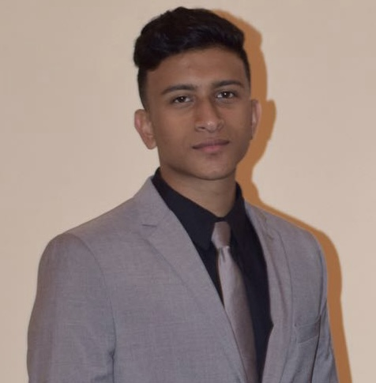
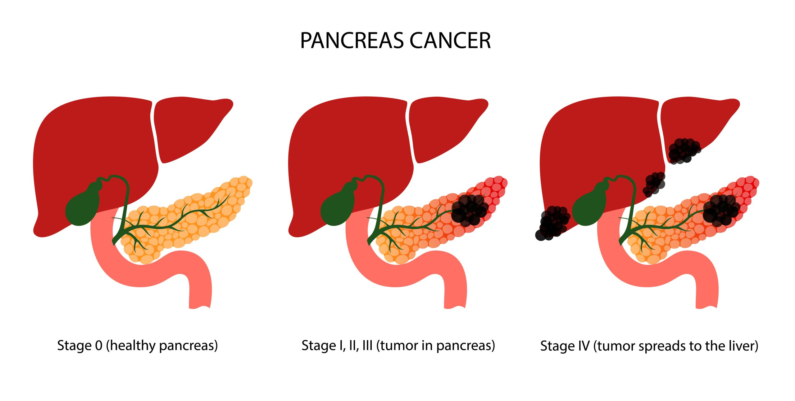
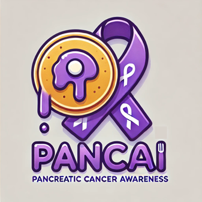
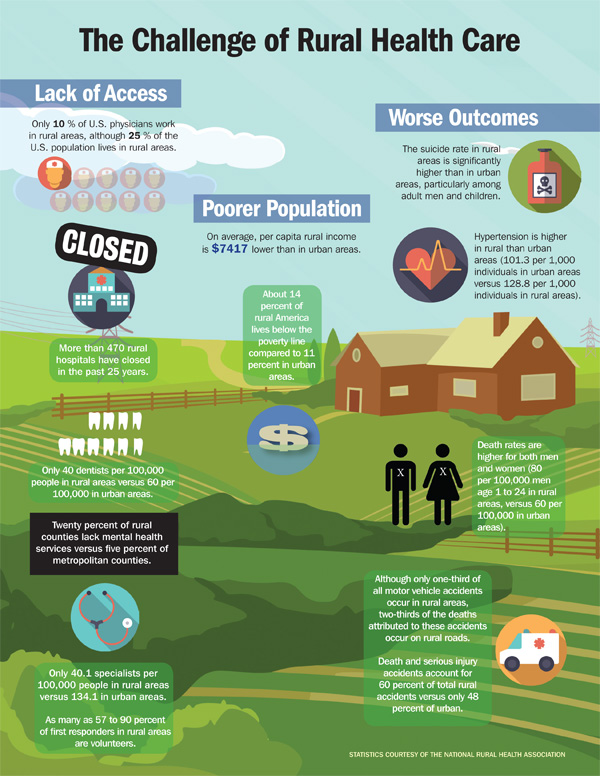

Hello!
I'm a Data Scientist in the healthcare & biomedical sector interested in:
- Precision Medicine
- Public Health
- M.L/A.I Development
- Analytics & Engineering
- Cloud & Blockchain Technologies
- Business Maturity
- Ethics & Governance
Future of Healthcare: Precision Medicine & Medical Intelligence
From generalized treatments to individualized solutions; from siloed health systems to integrated ecosystems; from reactive to preventive — medical intelligence and precision medicine heralds a powerful transformation in healthcare.Harnessing M.L for Pancreatic Cancer Detection
 The goal of this project is to employ various traditional machine learning algorithms utilizing urinary biomarkers, Plasma CA19-9, and demographic info - for the detection of pancreatic ductal adenocarcinoma (PDAC), PDAC resection-eligible cases, and chronic pancreatitis (C.P) patients at risk of developing PDAC.Eye Disease Diagnostics & Computer Vision
The goal of this project is to employ computer vision techniques for the detection of eye diseases (glaucoma, cataract, and diabetic retinopathy) utilizing ResNet-18 Deep Learning Model.Healthcare Diagnostics Bot
Simple implementation of NLP techniques to power a rudimentary "GenAI bot". Input symptoms and get diagnostic and treatment outputs! Please this is not to be used for medical advice just research/fun!Pancake the Pancreatic Cancer Navigator
 PanCAI (Pancake) – AI Agent navigating patients and family through Pancreatic Cancer diagnosis, prognosis, treatment, and survival.Colorectal Cancer Analytics

Clinical analytics project completed on colorectal cancer remission and recurrence data. Unique interests were in disease-free survival (DFS) longevity and therapy usage.
Health Equity & Integrated Health Systems for Disenfranchised Communities: Rural Healthcare
 The integrated health system methodology in rural healthcare with a strong emphasis on data-driven technology and dynamic intelligent systems — will lead to successful coordinated, continuous, and collaborative care that ensures health equity, as well as, the best quality of life for patients and their loved ones.- © All Property Rights of Mir A. Hassan